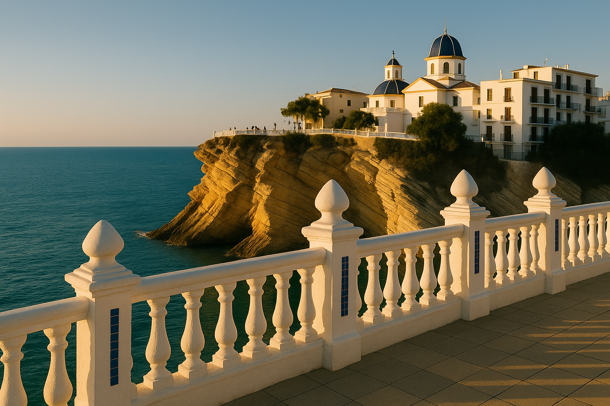
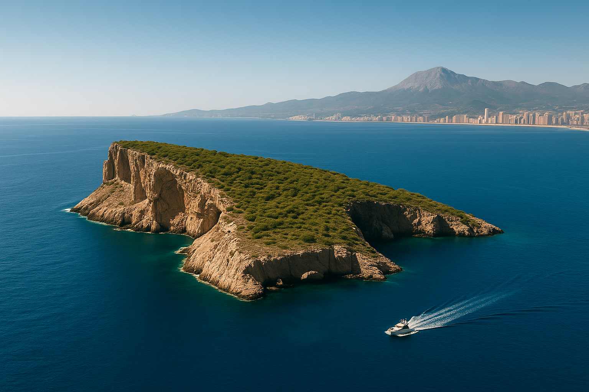
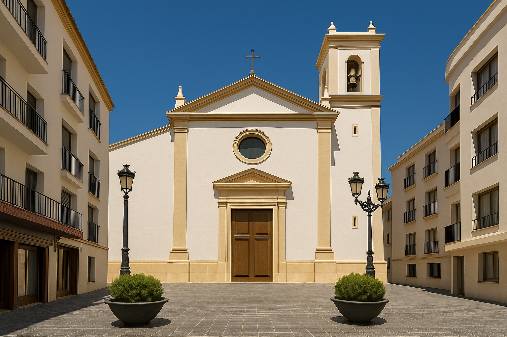
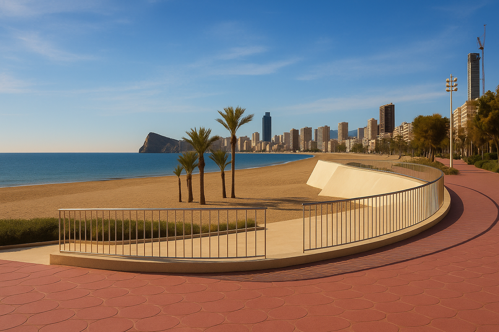
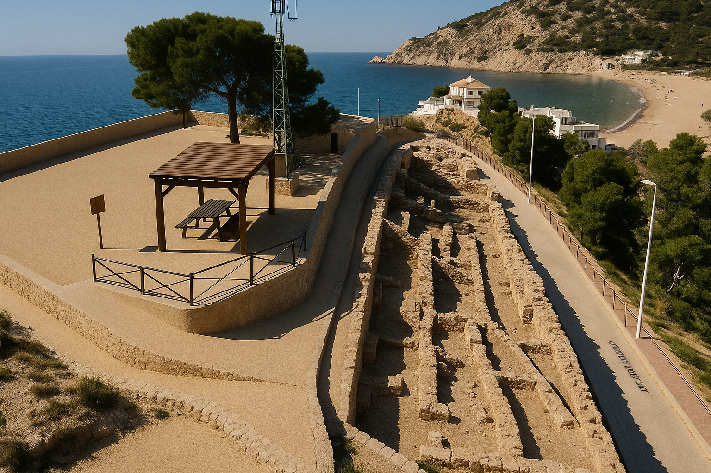

Benidorm
¡Aquí están las cinco paradas a descubir!
Tu guía inteligente para descubrir Benidorm
¡Aquí están las cinco paradas a descubir!
Un icónico balcón entre acantilados que separa las dos playas y ofrece una postal perfecta del mar.
Visible desde la playa, esta isla misteriosa está rodeada de leyendas y es un paraíso para el snorkel.
Una joya blanca y azul del siglo XVIII en lo alto del casco antiguo, con vistas al mar y encanto tradicional.
Relájate frente al mar en uno de los paseos más modernos y premiados de Europa.
Un mirador tranquilo con restos romanos y vistas espectaculares de la bahía de Benidorm.
Lucía M. ⭐⭐⭐⭐⭐
Muy útil. Nos encantó el punto del Tossal, no lo conocíamos y las vistas son brutales.
Raúl G. ⭐⭐⭐⭐☆
Audio claro y bien explicado. La parada en la iglesia fue mi favorita.